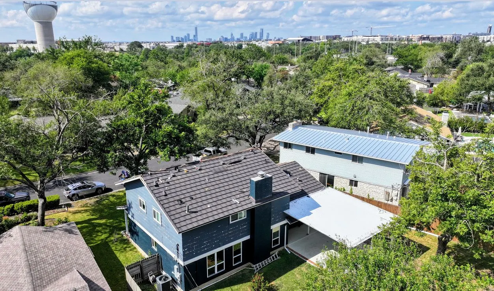

Premium Roofing Services in Austin
Our Austin, TX team specializes in standing seam metal roofs and stone coated steel metal roofs to provide our customers with high quality and eco-friendly roofing options. Our focus our efforts on helping clients with shingle, metal and tile roofs damaged by hail and windstorms that frequently hit Austin.
We're proud to be a local company deeply connected to the Austin, TX community. Our team lives and works in the area, giving us an intimate understanding of local building codes and the specific roofing needs of properties in the communities.
Whether you need a complete roof replacement, emergency repairs after a storm, or regular maintenance to extend your roof's lifespan, our Austin, TX and Travis County roofing experts are here to help with prompt, professional service for metal, tile, and shingle roofs.
Schedule Consultation Now!Our Austin, TX Roofing Services
Residential Roofing
Austin homeowners looking for roofing services! Protect your home with our premium residential roofing solutions, from traditional asphalt shingles to more environmentally friendly and energy-efficient stone-coated steel and standing seam metal roofing options.
Commercial Roofing
Durable commercial roofing systems for businesses throughout Austin, TX and Travis County, designed to minimize disruption and maximize the longevity and durability of your roof.
Roof Repair for Wind or Hail Damage
Fast, reliable roof repairs for Travis County properties, addressing damage from storms, aging, or other issues.
Roof Repair
Expert leak detection and and fast-turn roof repair services to protect Austin homes and businesses from water damage.
Tile Roofs
Beautiful, long-lasting spanish, clay, and concrete tile roofing options perfectly suited to Austin's climate and architectural styles.
Metal Roofs
Eco-friendly stone-coated steel and standing seam metal roofing solutions that stand up to Austin's hot summers and severe weather events.


What Our Austin Clients Say
"10/10 recommendation for Simeon and the team at Green shield roofing! After needing back to back roof replacements due to hail and having a negative initial experience with a different roofing company, working with Simeon was a refreshingly different and positive experience from start to finish. Simeon is very communicative and thorough. He was hands on every step of the way and has gone above and beyond to ensure everything was taken care of."
"I woke up to a leak this morning, and reached out to Green Shield Roofing. They were timely in responding to me and were able to send someone out quickly to inspect the leak. After the inspection, they let me know it was an HVAC leak, and gave me great referrals. They went the extra mile and went up on my roof just to double check that everything looked good. They found a few minor issues like rusty nails and fixed them free of charge. I’ll be referring anyone I know in the Austin area to them for their roofing needs."
"Simeon @ Green Shield has been amazing to work with. I’ve had storm damage twice on my roof in the recent months and I have nothing negative to say about working with Green Shield. Great pricing, excellent communication, and goes above and beyond for customer service. Thanks again!"
"Went above and beyond when we needed help the most. Right after a major hailstorm, we were left with five shattered windows and another storm just hours away. The company we originally hired never showed up. Thankfully, our neighbors had hired Green Shield Roofing, and as Simeon and Calvin were wrapping up next door at 9pm, I asked if they could help us too. Even though they had another job to get to, they kindly stepped in and covered up our 2nd story windows. Their quick action saved us from additional water damage that night. I'm incredibly grateful for their responsiveness and generosity—and I would absolutely call them again. Stellar service when it really mattered."
View more Testimonials
Looking for a roofer near Austin, TX?
If you're looking for roofing services near Austin TX, or anywhere else in Travis County, Green Shield Roofing is here to help with all your roofing needs. Contact us today for a free roof consultation and estimate.
Claim your Free Consultation